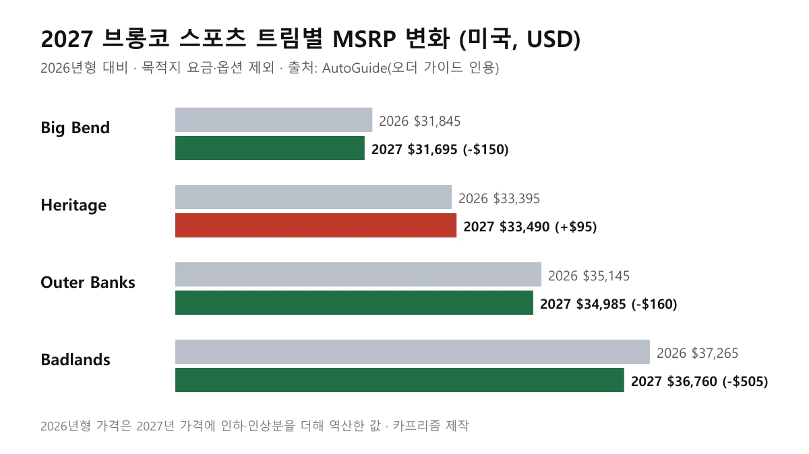
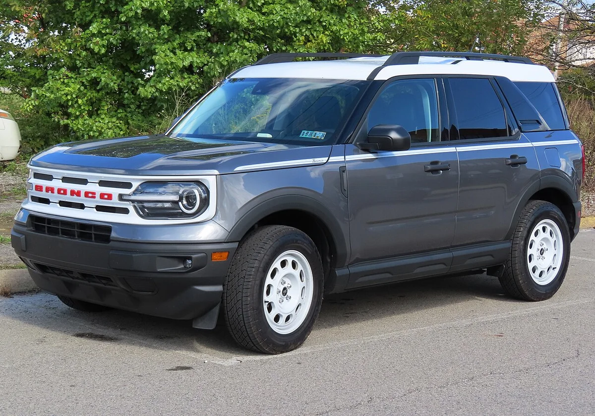
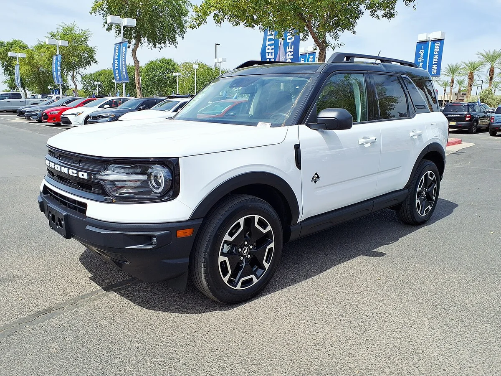
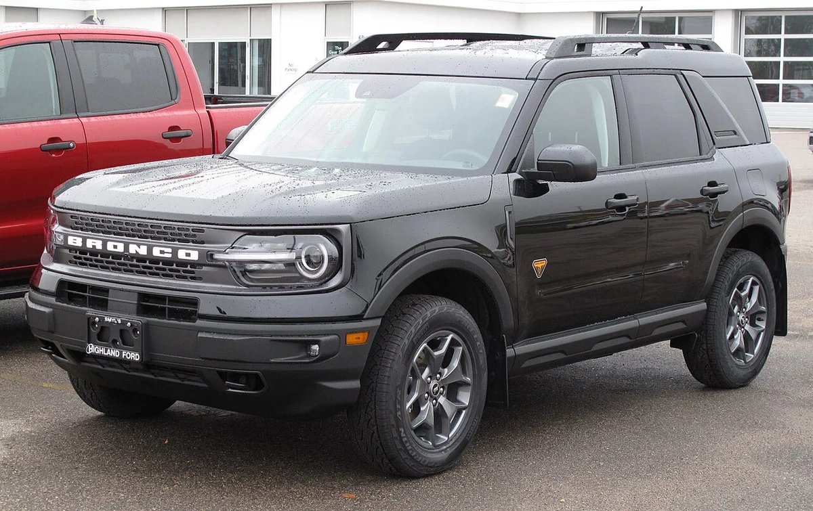
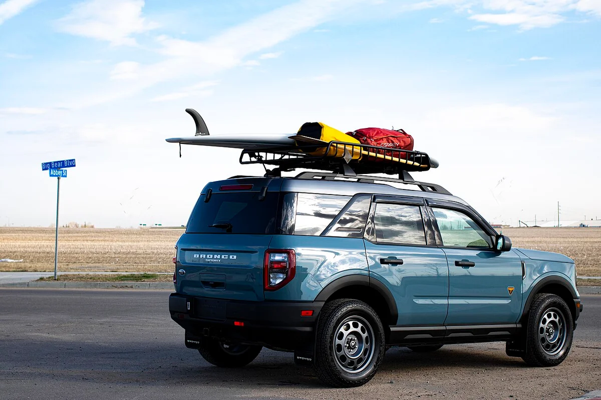

▲ 브롱코 스포츠 빅벤드(2022년형 사진). 2027년형 실물 사진이 아니라 같은 차체의 이전 연식 사진이다 ⓒ MercurySable99, Wikimedia Commons (CC BY-SA 4.0)
"신형이 더 싸졌다는데, 정말 이득일까?" 2027 브롱코 스포츠를 알아보는 사람이 가장 먼저 품을 법한 의문이다. 미국에서 보도된 주문 가이드(오더 가이드) 기준으로 4개 트림 중 3개는 가격이 내려갔고, 시작가는 $31,695다. 다만 값이 내려간 만큼 빠진 장비가 있어서, 어느 트림이 진짜 이득인지는 표로 따져봐야 한다.
이 글에서는 트림별 가격 변화와 사라진 장비, 2026년형을 사는 편이 나은 경우, 풀사이즈 브롱코와의 차이, 그리고 "한국에서도 살 수 있나"까지 한 번에 정리한다. 가격은 모두 미국 현지 MSRP(달러)이며, 환율과 세금이 불확실해 원화로 환산하지 않았다.
확인 범위를 먼저 밝힌다. 포드 공식 사이트와 미디어 사이트에서는 2027년형 가격을 확인하지 못했다. 아래 2027년형 가격과 장비 변경은 미국 매체 AutoGuide(8월 31일)가 포드 주문 가이드와 CarsDirect 보도를 인용해 전한 내용이다. 오토에볼루션 등 다른 매체도 같은 수치를 전했지만 모두 같은 주문 가이드 보도에서 갈라진 것으로 보여, 포드 공식 발표로 확인된 정보라고는 할 수 없다.
▲ 브롱코 스포츠 빅벤드(2022년형 사진). 2027년형 실물 사진이 아니라 같은 차체의 이전 연식 사진이다 ⓒ MercurySable99, Wikimedia Commons (CC BY-SA 4.0)
1. 트림별 가격표 — 3개 내리고 1개 올랐다
2027년형 브롱코 스포츠는 빅벤드·헤리티지·아우터뱅크스·배들랜즈 4개 트림 구성이다. 이 중 배들랜즈의 인하 폭이 $505로 가장 크고, 헤리티지만 $95 올랐다. 포드 공식 사이트에 올라 있는 2026년형 트림 구성도 같은 4개다.
| 트림 | 2026년형(역산) | 2027년형 | 변화 | 엔진(2026년형 공식 페이지 기준) |
|---|---|---|---|---|
| 빅벤드 | $31,845 | $31,695 | -$150 | 1.5L 에코부스트 |
| 헤리티지 | $33,395 | $33,490 | +$95 | 1.5L 에코부스트 |
| 아우터뱅크스 | $35,145 | $34,985 | -$160 | 1.5L 에코부스트 |
| 배들랜즈 | $37,265 | $36,760 | -$505 | 2.0L 에코부스트 |
2026년형 가격은 보도된 2027년형 가격에 인하·인상분을 더해 역산한 값이다(배들랜즈는 보도에 $37,265로 직접 명시). 이 역산값은 2026년형 트림별 MSRP를 정리한 미국 자동차 정보 사이트 iSeeCars의 수치($31,845·$33,395·$35,145·$37,265)와 네 트림 모두 일치했다. 목적지 요금(destination charge)과 옵션은 포함되지 않은 시작가이며, 오토에볼루션도 빅벤드 $31,695를 목적지 요금 전 가격이라고 적었다. 2026년형의 목적지 요금은 트림당 $1,995로 소개되지만 2027년형 금액은 포드 공식 자료로 확인하지 못했다. 한편 오토에볼루션의 한 대목은 $36,760을 2026년형 가격으로 적어 AutoGuide와 엇갈리므로, 구매 전에 포드 딜러 견적으로 최종 확인해야 한다.

▲ 2027 브롱코 스포츠 트림별 MSRP 변화. 가로축이 $28,000부터 시작하므로 막대 길이가 가격 비율을 뜻하지는 않는다 카프리즘 제작 · 수치 출처: AutoGuide
2. 값이 내린 이유 — 빠진 장비를 표로 보니
가격 인하의 대가는 장비 삭제다. AutoGuide가 포드 주문 가이드를 인용해 전한 내용에 따르면, 가장 광범위한 변화는 모든 트림에서 오토 스톱·스타트(정차 시 시동 자동 정지 기능)가 사라진 것이다. 나머지는 트림마다 다르다.
| 트림 | 삭제된 표준 장비 |
|---|---|
| 전 트림 공통 | 오토 스톱·스타트 |
| 빅벤드 | 열선 사이드미러, 접이식 뒷좌석 센터 암레스트(컵홀더 포함) |
| 헤리티지 | 열선 사이드미러 |
| 아우터뱅크스 | 6방향 전동 조수석 → 6방향 수동, 자동 눈부심 방지 룸미러 |
| 배들랜즈 | 8방향 전동 운전석 → 6방향 수동, 듀얼존 에어컨 표준 제외, 자동 눈부심 방지 룸미러 |
삭제된 장비 중 일부는 옵션 패키지나 상위 트림으로 다시 살 수 있다고 AutoGuide는 전했다. 그러니 열선 미러나 전동 시트가 꼭 필요한 사람은 옵션을 되살린 뒤의 최종 가격으로 비교해야 한다. 반대로 스톱·스타트를 늘 끄고 다니던 사람에게는 사실상 가격 인하 쪽만 남는다.

▲ 브롱코 스포츠 헤리티지(2023년형 사진). 이번에 유일하게 가격이 오른 트림이다 ⓒ MercurySable99, Wikimedia Commons (CC BY-SA 4.0)
3. 2026년형을 살까, 2027년형을 기다릴까
장비를 중시하면 2026년형, 가격 하나만 보면 2027년형이 유리해 보인다. AutoGuide는 2026년형 재고가 미국 전역에 2만 1천 대 넘게 남아 있고 이미 할인이 붙은 곳이 많다고 전했다(보도 인용이며 정확한 수치는 확인하지 못했다).
본지가 앞서 다룬 포드 3분기 기사에서 확인한 포드 보도자료 기준, 9월 말 브롱코 스포츠 재고는 약 3만 5,500대였다. 같은 분기 브롱코 스포츠 판매는 34,751대(+12.7%)였다. 재고(약 3만 5,500대)가 한 분기 판매분과 비슷한 규모여서 2026년형 할인 여지는 있는 것으로 읽힌다. 다만 지역·딜러별 실제 할인액은 확인하지 못했다.
| 이런 사람이라면 | 유리한 쪽 | 이유 |
|---|---|---|
| 전동 시트·듀얼존 에어컨이 필요한 배들랜즈 희망자 | 2026년형 | 2027년형은 표준에서 삭제 |
| 겨울에 열선 미러를 쓰는 빅벤드·헤리티지 희망자 | 2026년형 또는 옵션 확인 | 2027년형은 표준에서 삭제 |
| 시작가를 최대한 낮추고 싶은 사람 | 2027년형 빅벤드 | $31,695, 전년 대비 -$150 |
| 스톱·스타트를 꺼두던 사람 | 2027년형 | 삭제가 단점이 아님 |

▲ 브롱코 스포츠 아우터뱅크스(2024년형 사진). 2027년형에서는 조수석 전동 시트가 수동으로 바뀐 것으로 보도됐다 ⓒ HJUdall, Wikimedia Commons (CC0)
4. 풀사이즈 브롱코와 무엇이 다른가
이름만 같을 뿐 뼈대가 다른 차다. 브롱코는 바디온프레임 구조의 정통 오프로더이고, 브롱코 스포츠는 에스케이프와 같은 하부 구조를 쓰는 유니바디 크로스오버다. 본지 비교 기사에서 정리한 수치로는 4도어 브롱코의 전장이 189.4인치, 브롱코 스포츠가 172.7인치로 약 17인치(43cm) 짧다.
| 항목 | 브롱코 | 브롱코 스포츠 |
|---|---|---|
| 구조 | 바디온프레임 | 유니바디(에스케이프와 같은 하부 구조) |
| 전장(4도어 기준) | 189.4인치 | 172.7인치 |
| 최대 출력 | 최대 330마력 | 250마력(2.0L) |
| 2026년 3분기 미국 판매 | 38,020대 | 34,751대 |
풀사이즈 브롱코의 역대 계보는 브롱코 60주년 기사에서, 미국 판매 경쟁은 포드 오프로드 라인업 기사에서 다뤘다. 이름이 같아 헷갈리는 쌍을 한꺼번에 보려면 같은 이름 다른 차 3쌍 기사가 도움이 된다.

▲ 브롱코 스포츠 배들랜즈(2021년형 사진). 이번 개편에서 가장 큰 폭인 $505가 내려간 트림이다 ⓒ Elise240SX, Wikimedia Commons (CC BY-SA 4.0)
5. 한국에서 살 수 있나 — 브롱코는 팔아도 브롱코 스포츠는 확인되지 않는다
2026년 10월 17일 현재 포드코리아가 브롱코 스포츠를 국내에서 판매한다는 근거는 찾지 못했다. 포드코리아 공식 사이트는 접속이 차단돼 최신 라인업 페이지를 직접 확인하지는 못했고, 검색된 국내 보도는 모두 풀사이즈 브롱코에 관한 것이었다. 국내에서 확인되는 포드 모델은 브롱코, 익스플로러, 머스탱, 레인저 등이다. 따라서 이 차는 "한국에서 살 수 없는 차"로 보는 것이 현재로서는 안전하다. 국내 가격도 확인된 것이 없다.
한편 풀사이즈 브롱코는 2022년 국내에 들어왔다. 출시 당시 4도어 하드탑 아우터뱅크스 모델이 6,900만 원이었다는 보도가 있다. 이후 라인업이 확대됐지만 현재 판매 트림과 가격은 포드코리아 공식 사이트에서 확인해야 한다. 미국 본사의 브롱코 스포츠 소개 페이지는 아래에서 볼 수 있다. 포드 미국 브롱코 스포츠 바로가기
포드의 2029년 저가 SUV 계획은 2029년 2만 5천 달러 SUV 기사에서, 미국에서는 팔지 않는 브롱코 파생 전기차 이야기는 중국형 전기 브롱코 기사에서 다뤘다.

▲ 브롱코 스포츠 배들랜즈의 후면(2021년형 사진). 한국에서는 판매 근거를 확인하지 못했다 ⓒ Truck Hardware, Wikimedia Commons (CC BY 2.0)
✅ 구매 전 체크포인트
· 2027년형 가격·장비 변경은 AutoGuide 보도(주문 가이드 인용)라 포드 공식 발표로 재확인이 필요하다
· 가격은 목적지 요금·세금·옵션 제외 시작가이며, 원화로 환산하지 않았다
· 2027년형 파워트레인은 공식 자료로 확인하지 못했다. 보도에 엔진 변경은 없었고(표의 엔진은 2025~2026년형 포드 공식 페이지 기준 1.5L 180마력·2.0L 250마력), 하이브리드 트림은 언급되지 않았다
· 한국에서는 브롱코 스포츠 판매를 확인하지 못했으니 직수입 전에 인증·AS부터 알아봐야 한다
6. 요약
2027년형 브롱코 스포츠는 미국에서 $31,695부터이고, 4개 트림 중 3개는 가격이 내려갔다. 배들랜즈 -$505, 아우터뱅크스 -$160, 빅벤드 -$150, 헤리티지만 +$95다. 대신 전 트림에서 오토 스톱·스타트가 빠졌고 열선 미러, 전동 시트, 듀얼존 에어컨 등이 트림별로 삭제됐다.
풀사이즈 브롱코와는 구조·크기·출력이 모두 다르고, 한국에서는 브롱코 스포츠 판매를 확인하지 못했다. 가격과 장비 정보는 포드 공식 자료로 재확인하지 못한 단일 보도 기반이므로, 구매를 고려한다면 포드 미국 딜러나 공식 사이트로 최종 확인이 필요하다.